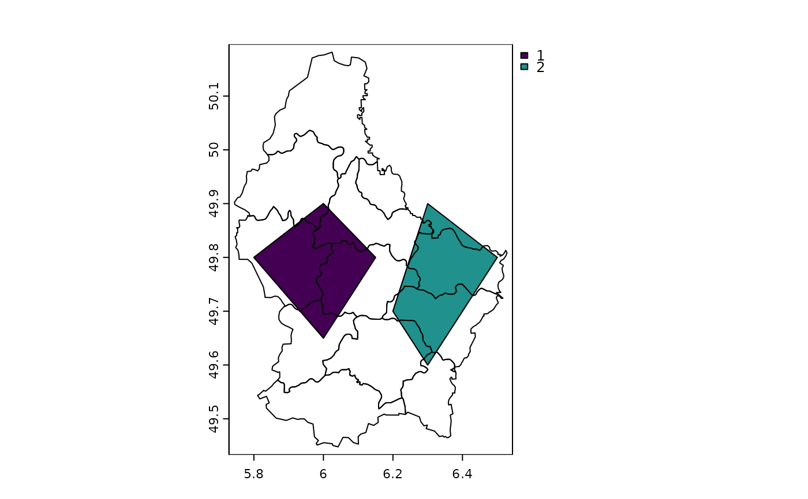
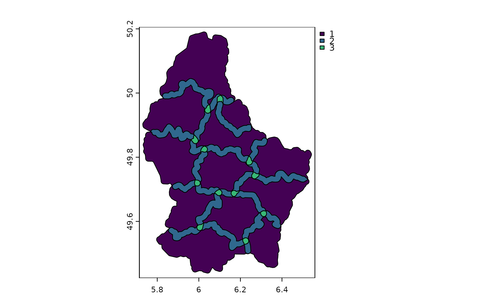

Union SpatVector or SpatExtent objects
union.RdIf you want to append polygon SpatVectors use rbind instead of union. union will also intersect overlapping polygons between, not within, objects. Union for lines and points simply combines the two data sets; without any geometric intersections. This is equivalent to rbind. Attributes are joined.
If x and y have a different geometry type, a SpatVectorCollection is returned.
If a single SpatVector is supplied, overlapping polygons are intersected. Original attributes are lost. New attributes allow for determining how many, and which, polygons overlapped.
SpatExtent: Objects are combined into their union; this is equivalent to +.
Usage
# S4 method for class 'SpatVector,SpatVector'
union(x, y)
# S4 method for class 'SpatVector,missing'
union(x, y)
# S4 method for class 'SpatExtent,SpatExtent'
union(x, y)Examples
e1 <- ext(-10, 10, -20, 20)
e2 <- ext(0, 20, -40, 5)
union(e1, e2)
#> SpatExtent : -10, 20, -40, 20 (xmin, xmax, ymin, ymax)
#SpatVector
v <- vect(system.file("ex/lux.shp", package="terra"))
v <- v[,3:4]
p <- vect(c("POLYGON ((5.8 49.8, 6 49.9, 6.15 49.8, 6 49.65, 5.8 49.8))",
"POLYGON ((6.3 49.9, 6.2 49.7, 6.3 49.6, 6.5 49.8, 6.3 49.9))"), crs=crs(v))
values(p) <- data.frame(pid=1:2, value=expanse(p))
u <- union(v, p)
plot(u, "pid")

b <- buffer(v, 1000)
u <- union(b)
u$sum <- rowSums(as.data.frame(u))
plot(u, "sum")
